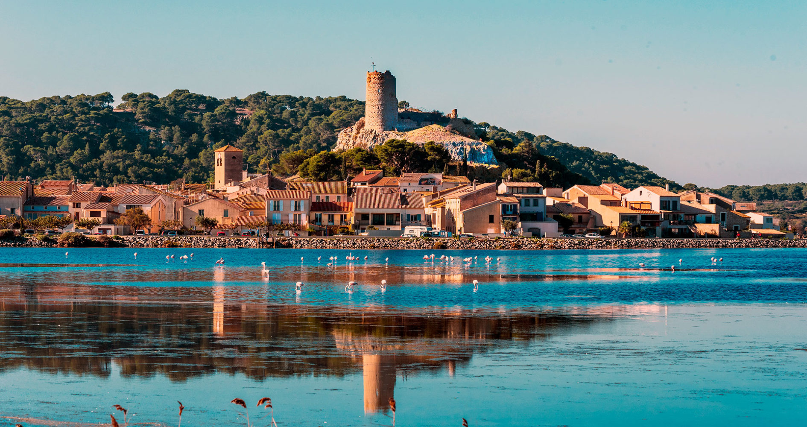

Votre vétérinaire
à Gruissan.
Cabinet médico-chirurgical fondé en 1997. Soins, chirurgie, imagerie et hospitalisation sous vidéosurveillance.
Une structure complète,
à votre service.
Tous les soins essentiels assurés sur place, sans transfert.
Consultation & prévention
Bilan de santé, suivi clinique, antiparasitaires et conseils nutrition pour chiens, chats et NAC.
Chirurgie & soins techniques
Bloc opératoire dédié, soins pré et post-opératoires, hospitalisation sous surveillance vidéo.
Imagerie médicale
Radiographie numérique et échographie sur place. Résultats immédiats pour des décisions rapides.
Laboratoire & analyses
Analyses réalisées en interne. Bilan sanguin, urinaire et plus encore, pour un diagnostic précis.


Une relation médicale directe, sans intermédiaire.
Nous avons voulu un cabinet où les décisions se prennent vite, avec les bons outils et une communication claire avec les propriétaires. Pas de délai inutile, pas de transfert superflu.
Le Dr Jean-François EYME est vétérinaire depuis 1988, diplômé de l'École Nationale Vétérinaire d'Alfort et de la Faculté de Médecine de Paris.
Aucun groupe. Aucun actionnaire. Juste votre vétérinaire.
Contrairement à la majorité des cliniques, notre cabinet n'appartient à aucun groupement actionnarial. Nous ne reversons aucun dividende à des fonds de pension, qu'ils soient français ou étrangers. Cette indépendance nous permet de fixer nos tarifs librement et de prendre chaque décision médicale dans le seul intérêt de votre animal — jamais pour rémunérer des investisseurs.
« Je suis le fondateur et le responsable de mon cabinet. Les cliniques affiliées à des fonds de pension ont des objectifs de rentabilité qui se répercutent forcément sur les prix. »
— Dr Jean-François EYME, fondateurPour les habitants
et les visiteurs.
Résident, propriétaire d'une résidence secondaire ou touriste de passage — nous accueillons votre animal avec le même soin. À 10 minutes de Narbonne.
Tout ce qu'il faut savoir avant de venir.
Horaires d'ouverture
| Lundi | 09:00 – 12:00 / 17:00 – 19:00 |
| Mardi | 09:00 – 12:00 / 17:00 – 19:00 |
| Mercredi | 09:00 – 12:00 / 17:00 – 19:00 |
| Jeudi | 09:00 – 12:00 / 17:00 – 19:00 |
| Vendredi | 09:00 – 12:00 / 17:00 – 19:00 |
| Samedi | 09:00 – 12:00 |
| Dimanche | Fermé |
En cas d'urgence pendant les horaires d'ouverture, appelez-nous immédiatement au 04 68 75 18 22.
Trois personnes à votre écoute.
Une équipe soudée, formée et engagée dans la qualité des soins.


Ils nous font confiance depuis des années.
Plus de 300 avis vérifiés sur Google, quasi tous à 5 étoiles.